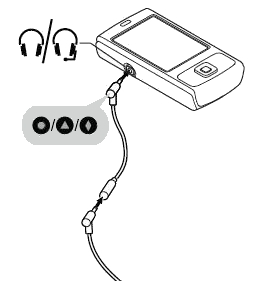

The Coqui is a simple electronic platform that converts sensor readings (like light levels, temperature levels, or conductivity) to an audio frequency output. This page is a way of analyzing the audio signal that comes out of a Coqui.

Turn on your Coqui, and plug the audio cable into the audio port on your laptop.